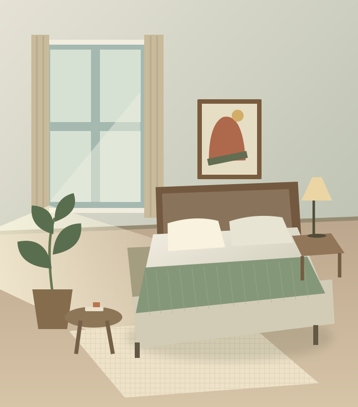

YOUR NEXT NOTE STARTS HERE
让灵感，成为
下一篇值得
收藏的笔记。
从真实笔记中找到方向，让文案与画面一起成形。
一个懂调研、懂表达，也尊重你审美的创作 Skill。
IDEA → NOTE 创作过程示意
从一个主题开始租房卧室改造
真实笔记调研✓
3 条合格参考
ROOM EDIT / 01✳
小房间
大改变。
大改变。
租来的房间，也有自己的模样

✓
封面为设计示意 · 非真实改造案例
你的风格，你来决定确认后生成 · 3:4 独立封面
03条
真实参考，先于创作
1,000 / 300
默认点赞 / 收藏门槛，可调整
10种
风格选择，审美由你
24h
合格缓存复用，减少重复检索
THE CREATIVE WORKFLOW
好的内容，
每一步都有来由。
把重复工作交给 Skill，
把关键选择留给创作者。
01 / RESEARCH
先有依据，再有好内容。
按最多收藏、最多点赞两种排序检索，合并去重并核验数据。从相关候选中选出 3 条参考，记录原始链接与采集时间。
没有合格数据，就说明缺口，不编造结果。搜索与去重双排序
点赞 / 收藏≥ 1000 / ≥ 300
合格参考3 条真实笔记
点击步骤查看细节。文案可在等待风格确认时输出；生成图片前必须确认风格。
MAKE IT FEEL LIKE YOU
同一个主题，
不止一种表达。
10 种视觉方向，自由选择。
封面与内页共用一套视觉语言。
选择你的视觉风格01—10
05 / 极简留白风
让文字成为主角。大面积留白与克制的装饰，适合金句、品牌感和少字封面。
STYLE PREVIEW3:4
A LITTLE ROOM. A LOT OF LIFE.
即时排版示意，不调用生图工具把日子，
住成喜欢。
住成喜欢。
ROOM
MAKEOVER
租房卧室改造指南 ↗MAKEOVER
SMALL SETUP. BIG POSSIBILITIES.
装进你的项目，
接住下一次灵感。
下载源码，在项目中安装技能。
准备好主题，剩下的跟着工作流走。
支持 Skills 的 Codex · Python 3.11+
图片生成需要环境提供相应工具
解压源码包，在项目根目录运行
python3 scripts/install_skill.py --project /你的项目路径↳ 将「/你的项目路径」替换为实际项目文件夹。
✓ 技能文件独立安装，已有文件不会被覆盖
CONNECTED TO REAL NOTES
有真实的数据，
才有扎实的起点。
通过独立的小红书 MCP 搜索工具，把真实笔记接入创作流程。一次扫码，按需查询，账号会话保存在你的设备。
阅读完整接入指南 ↗本地运行扫码登录查询与读取
你的 Codex 项目xiaohongshu-content
SKILLMCP
xiaohongshu-mcp第三方本地搜索工具
LOCAL检查登录扫码授权搜索笔记读取详情
此页面不读取你的账号。实际使用需在 Codex 中完成安装与登录。
安装 Skill 后，MCP 会自动连接吗？＋
不会。技能与搜索工具分别安装。先按接入指南准备浏览器组件、安装 MCP，再扫码登录。辅助脚本支持 Apple Silicon Mac；其他平台请参考上游项目文档。
查不到 3 条达标笔记时怎么办？＋
先检查连接和登录，再尝试保持主题意图的相关关键词。仍然不足时会明确说明缺口，由你决定扩大选题、调整门槛或明确跳过调研，绝不捏造赞藏数据。
会自动发布到小红书吗？＋
不会。创作流程仅使用登录、搜索、读取工具。最终文案与图片由你检查和发布；本项目不承诺内容流量或传播效果。
⌘ xiaohongshu-content MIT
▱小红书创作技能创作规则与界面配置
↳ SKILL.md
▱scripts安装、连接与打包
▱docs接入与维护说明
≡README.md从这里开始
LESS REPETITION. MORE CREATION.
你的下一个好内容，
从一句话开始。
使用本项目的 $xiaohongshu-content，主题是「租房卧室改造」。